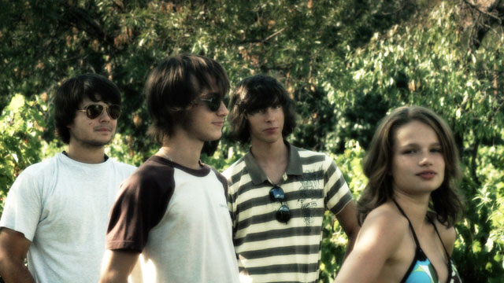

The Balaton Monks

- Hungarian Title
- Balatoni szerzetesek
- Production Format
- HDTV 1280 x 720, 24p
- Duration
- 13 minutes
- Aspect ratio
- 16 : 9
- Sound
- Dolby Digital 2.0 Stereo
- Dialogue
- Hungarian
- Subtitles
- English
Cast
- Dávid
- Dávid Ternyák
- Isti
- István Wosinski
- Andrew
- Endre András Simon
- Bianka
- Bianka Magyar
- Tamás
- Thomas Edgington
- Gillian
- Gillian Edgington
Crew
- Producer
- Emőke Szalai
- Writer, Director, Editor
- Mark Edgington
- Camera
- Mark Edgington
- Sound
- Emoke Szalai
- Music
- Besh o droM
- Thanks
- Nedda Kántor
Dénes & Kati Szalai
Csaba, Enikő & Dóra Pásztor
József & Ibolya Molnár
Kálmán & Klára Toronyi
©2008 Nine Tints Pictures